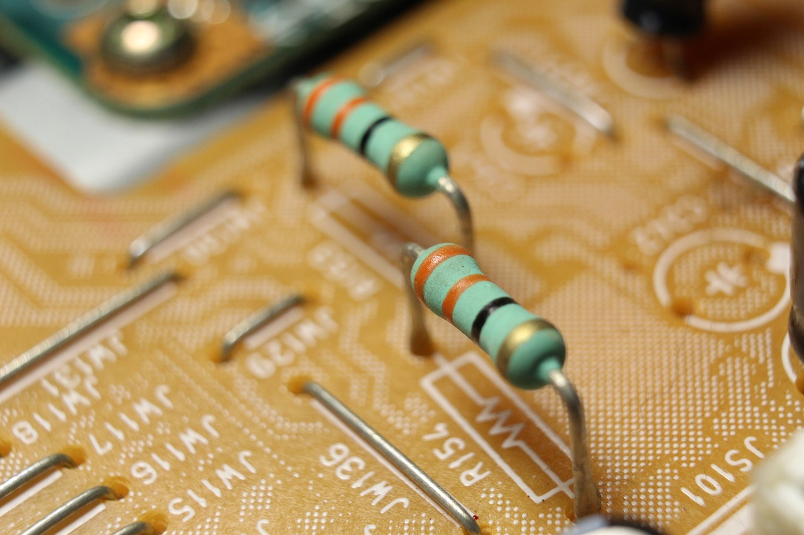

How to find the best resistor?
Resistor
First of all what is a resistor?
A resistor is a passive two-terminal electrical component, which is mostly used to reduce current flow, to divide voltages.
Calculate the resistance
The unit of resistance is Ohm(Ω).
It was named after a German physicist and mathematician, Georg Simon Ohm.
How to calculate the resistance?
R = U/I
What does it mean?
- R: Resistance
- U: Voltage
- I: Current
Use in everyday life
Let's calculate the resistance of an arbitrary consumer!
- U = 10V
- I = 2A
- R = ?
R = U/I = 10V / 2A = 5Ω
What about LEDs?
LEDs are semiconductors, so the formula will be a little different here:
R = (Us - ULED) / ILED
A typical red LED has a voltage of 2V and a current of 10mA(0.01A). We power it by 5V.
Let's substitute the values:
R = (5V - 2V) / 0.01A = 300Ω